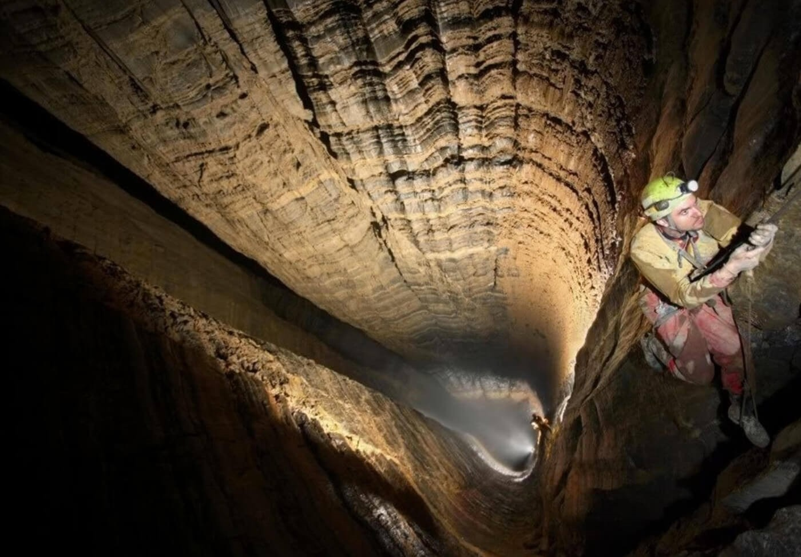
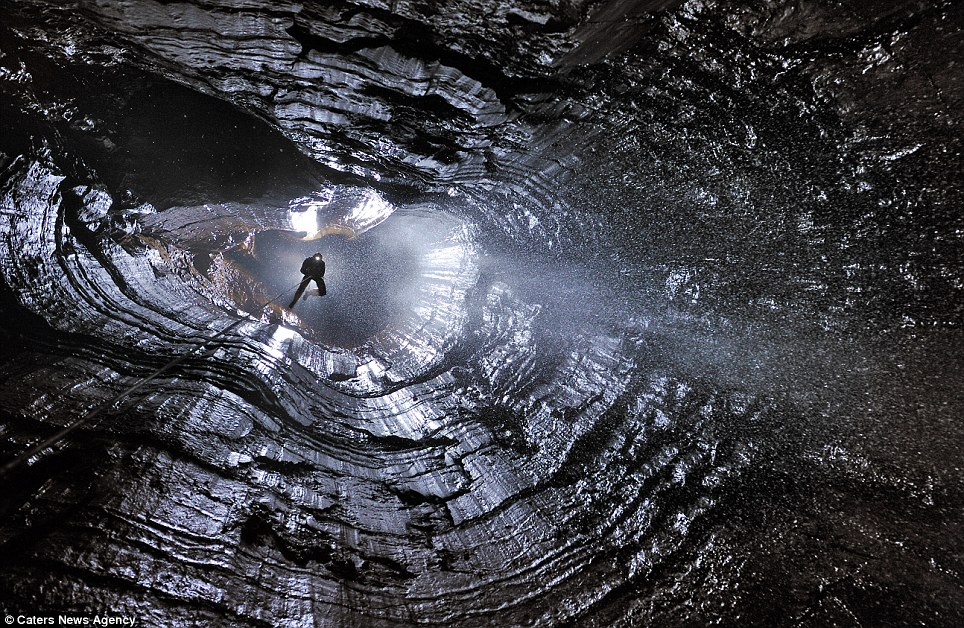

Pit Exploration Logs



During expeditions PCU always ensures the safety of their divers. However in the case of accidental injury or death PCU always equips every diver with a long range wireless camera and microphone. While unfornute, many expeditions end without the return of the diver. Many cases end in the same way, with the diver's connecter being cut. Rope or steel dosen't seem to matter to the pits. Once a diver reaches a depth of around 300 meters their safeguard snaps and they fall. None of them have been seem agian.